Earlier delivery · 6 columns
csv-guide-before.csv
The original format starts with ID and Name and ends with Email.
Download the earlier CSVID;Name;City;Group;Balance;Email
0001;Aster Studio;Oslo;Retail;125.50;aster@example.comInspect rows, filter a customer delivery, rearrange columns, save an Excel workbook, and compare two file formats. Follow the complete CSV workflow with real application screenshots and downloadable examples.
This guide is for the CodePrettify Windows application. CSV file handling and the native Save As and Compare Table Schema workflows shown here are not available in the browser extension.
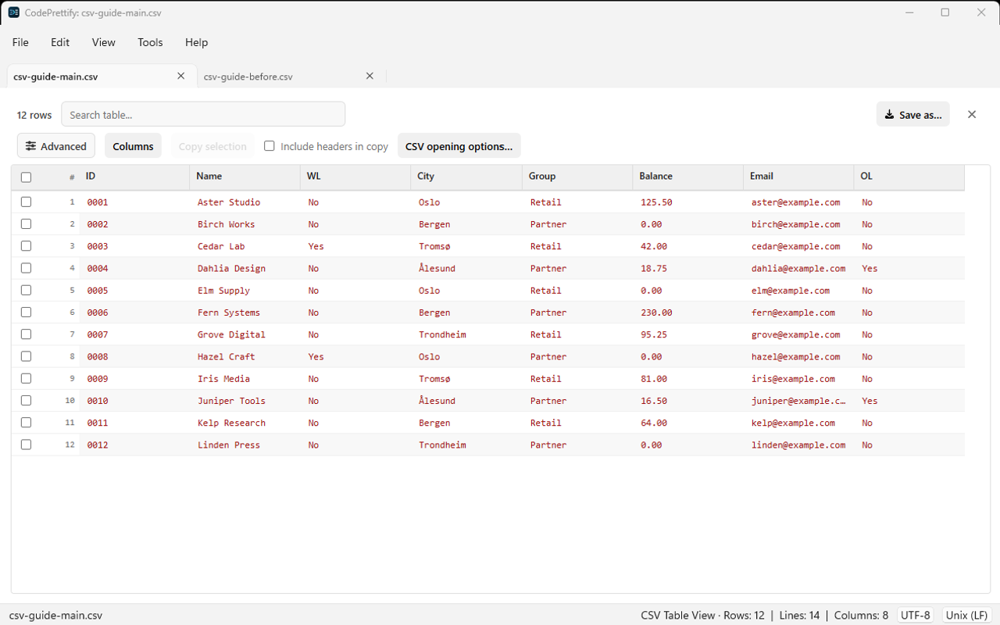
Both files contain twelve fictional business records. They use semicolons, UTF-8 text, Norwegian place names, and identifiers such as 0001. These are the exact samples used by the screenshot script, so you can reproduce each step.
The original format starts with ID and Name and ends with Email.
Download the earlier CSVID;Name;City;Group;Balance;Email
0001;Aster Studio;Oslo;Retail;125.50;aster@example.comThe updated delivery inserts WL after Name and appends OL at the end.
Download the main CSVID;Name;WL;City;Group;Balance;Email;OL
0001;Aster Studio;No;Oslo;Retail;125.50;aster@example.com;NoOpen csv-guide-main.csv with File > Open in the Windows app. With CSV formatting enabled, it opens in Table View. The first header is ID and the last is OL; opening a table does not alphabetize its columns.
Scroll horizontally to inspect wider files. Empty cells keep their position, so every value stays under the matching header. Leading zeros in IDs remain visible.
The bottom-right status bar shows Rows, Lines, and Columns. Lines counts the original source, including the header, blank lines, the empty final line after a trailing newline, and line breaks inside quoted fields. A CSV record can span several lines, so Lines is not calculated as Rows + 1. Filtering does not change the source line count.
Close the table with its X to return to Raw. This shows the plain source, including delimiters and quoting. CSV uses a Table View / Raw switch; it has no separate prettified CSV representation.
Choose Table View to reopen the grid. Your view choice is remembered. If CSV initially opens as text, choose Table View and check the CSV default view in Settings.
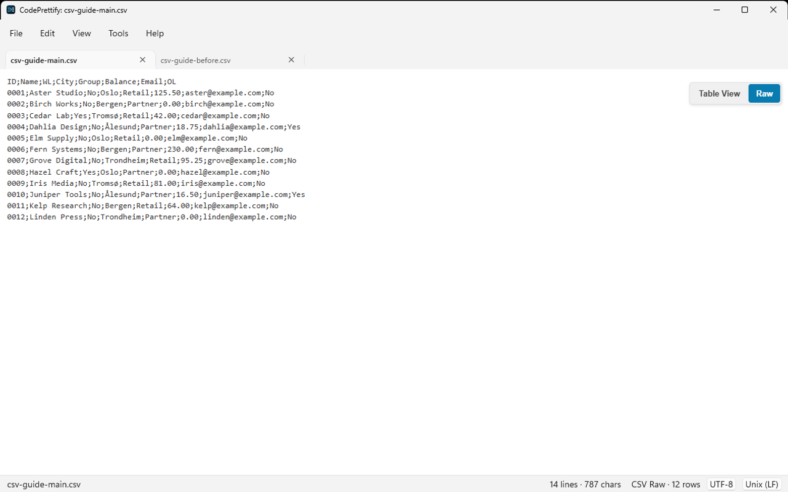
If a delivery opens as one wide column, shows incorrect characters, or uses its first record as a heading, choose CSV opening options… in the table toolbar. The same command is available under Tools while viewing Raw or a large CSV file.
Auto-detect shows the delimiter used to open the current file, such as Auto-detect: Semicolon (;). Keep it or choose comma, semicolon, tab, pipe, or a custom single character. A quote or line break cannot be a delimiter.
The encoding Auto-detect choice shows the detected encoding, such as UTF-8 or UTF-16 LE. You can instead select UTF-8, UTF-16 LE/BE, Windows-1252, or ISO 8859-1. Explicit overrides are shown as selected values rather than automatic detections. Changing it rereads the file bytes. Clear First row contains headers for headerless data; the table uses names such as column1 and retains the first data record.
Apply and reopen resets this table's filters, layout, and selection. It leaves the source file unchanged. The chosen interpretation is used when refreshing the open tab, saving table data, and comparing its schema. These opening choices last for the open tab; they are not a saved import profile.
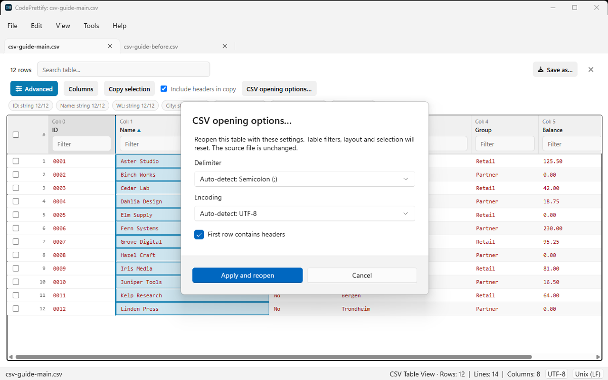
Encoding is available for files read from disk. Pasted text already has an encoding interpretation, so its encoding selector is disabled. CSV exports from headerless data remain headerless; JSON, HTML and Excel use the generated column labels.
The table search is always available. Turn on Advanced for column filters, source column indexes, and summaries. Hover a summary to read its unique and empty counts. Advanced defaults to off and remembers your last choice for the next table.
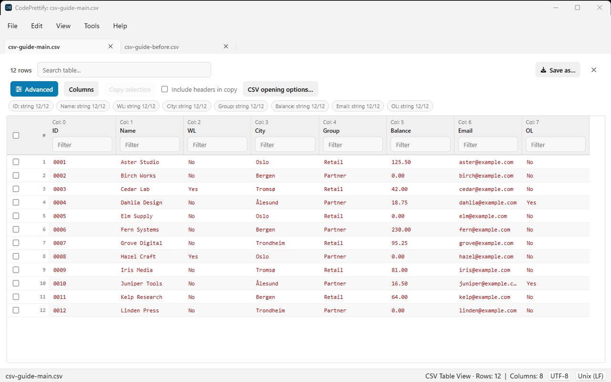
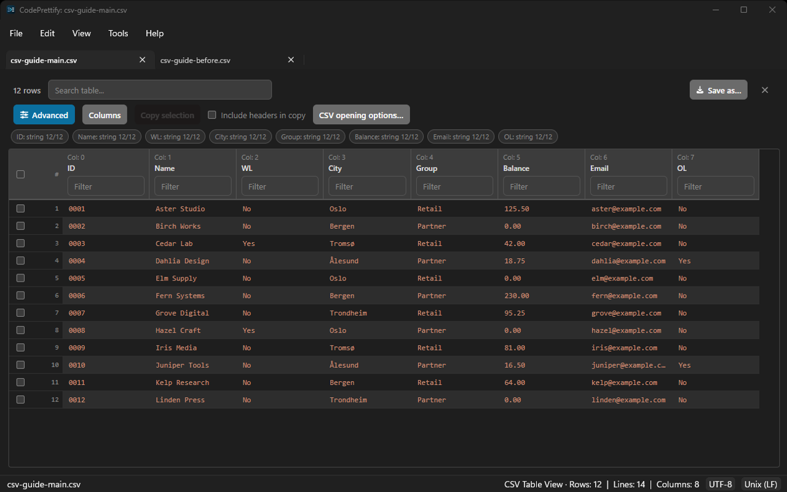
Enter Retail in the Group filter. Six sample rows remain. Table search and column filters combine, so adding Oslo to the table search narrows the result to two rows.
Click a column heading to sort the rows. Save As lets you choose current sorting or original row order when sorting has changed. Sorting the table does not rewrite the source file.
Check individual rows, or use the header checkbox to select the rows matching the current filter. Selection stays with its records when you sort or filter again.
Turning Advanced off hides its controls but retains entered filters. Clear the column filters and table search to restore every row, or deliberately choose All rows in Save As.
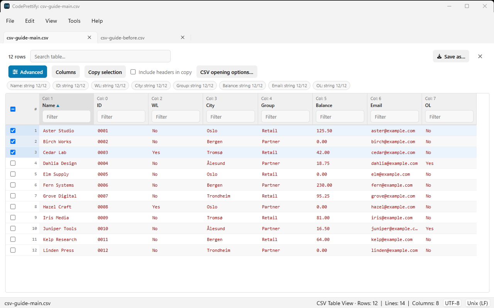
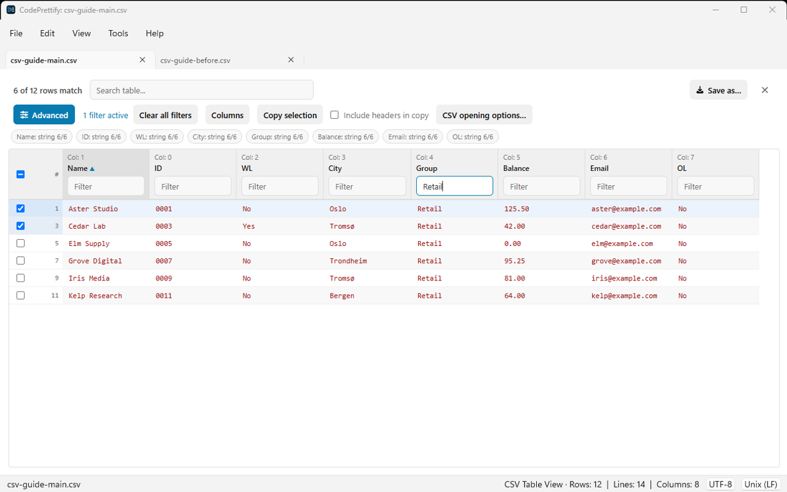
Hiding Advanced keeps your column filters active. The toolbar always shows the number of active filters, counting the global search and each nonempty column filter. Clear all filters clears them together and restores all rows, including when a filtered column itself is hidden.
For the sample, filter Group to Retail and turn Advanced off. Six records still match, and the active-filter indicator remains visible. Clearing the filters restores all twelve records.
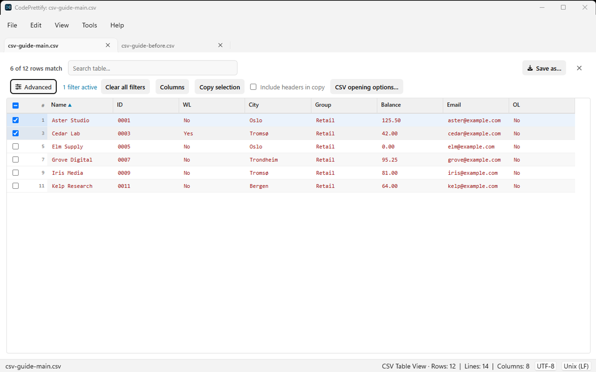
Drag a column heading to a new position. The insertion marker shows where it will land; move near an edge to scroll across a wide table. Release to move the header and all its cells together, or press Esc to cancel. Keyboard users can focus a heading and use Alt+Left or Alt+Right.
In the sample, move Name before ID. Advanced still labels Name Col: 1, because that number identifies its original position in the file. To write the rearranged delivery, choose Current table order in Save As. The order choice is disabled until columns actually differ from the source order.
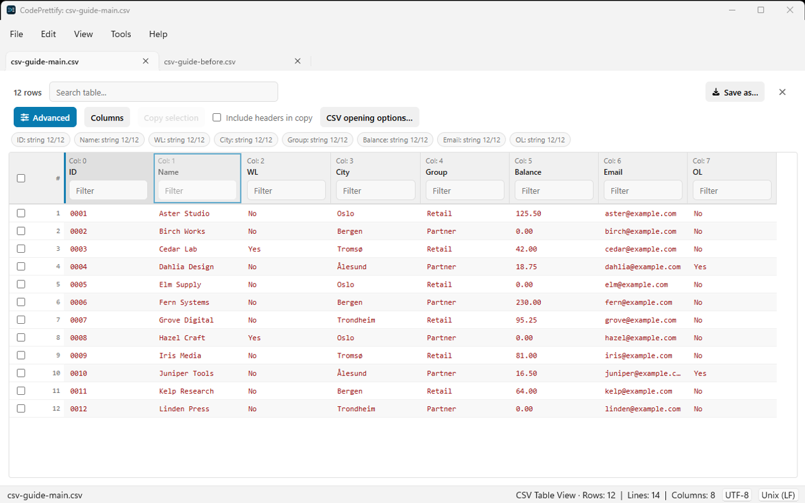
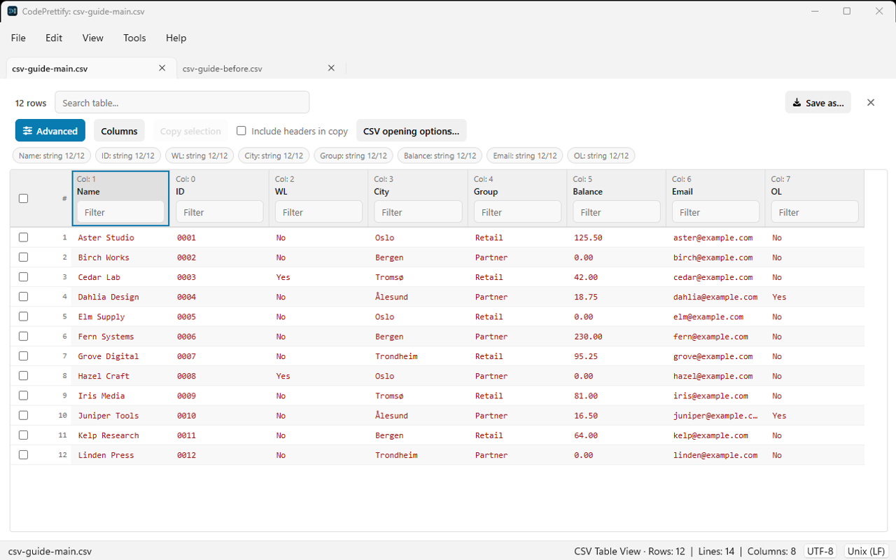
Open Columns to choose which fields appear. Uncheck Email in the sample to make more room. Hiding a column keeps its data and any filter active; at least one column stays visible. Reset columns restores source order, default widths, all columns, and no pin.
Drag the right edge of a header to resize it. You can also enter a pixel width in Columns, or focus a header's resize handle and use Left/Right arrows. Column widths range from 80 to 1,000 pixels.
Choose Pin beside ID to keep it at the left while scrolling horizontally. One data column can be pinned at a time. Pinning moves it to the front of the working order; Unpin returns it to its previous position. Layout choices remain while switching between Table View and Raw in the same tab, and reset when the document is reopened.
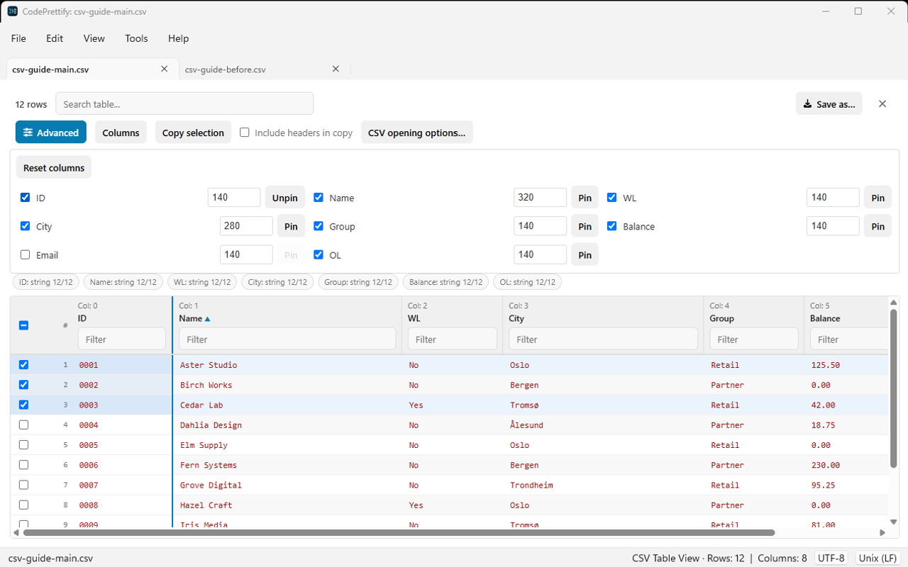
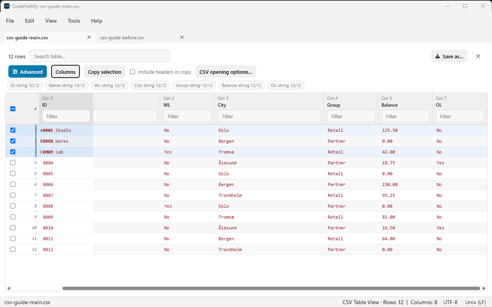
Click a cell, then Shift-click another cell to select a rectangle. Drag across cells to select directly, including scrolling near the table edges. Arrow keys move the active end of the selection; hold Shift to extend it. Escape clears the cell range.
Ctrl-click a column heading selects that column across all matching rows, including rows outside the rendered viewport. Click a row number and Shift-click another for a contiguous rectangle of complete rows. Alternatively, check a row checkbox and Shift-click another checkbox to select a contiguous set for both copying and Save As. Row ranges follow the current sorting and filtering.
Press Ctrl+C with the table focused, or choose Copy selection. Include headers in copy adds the column names as the first row of the copied text and remembers the choice for the next table. It affects both Copy selection and Ctrl+C; toggling it does not change the table display. Copied values form a tab-separated rectangle; tabs, quotes, and line breaks inside cells are quoted. Hidden columns and filtered-out rows are excluded from copying. Checked rows hidden by a filter are still available under Save As > Selected rows.
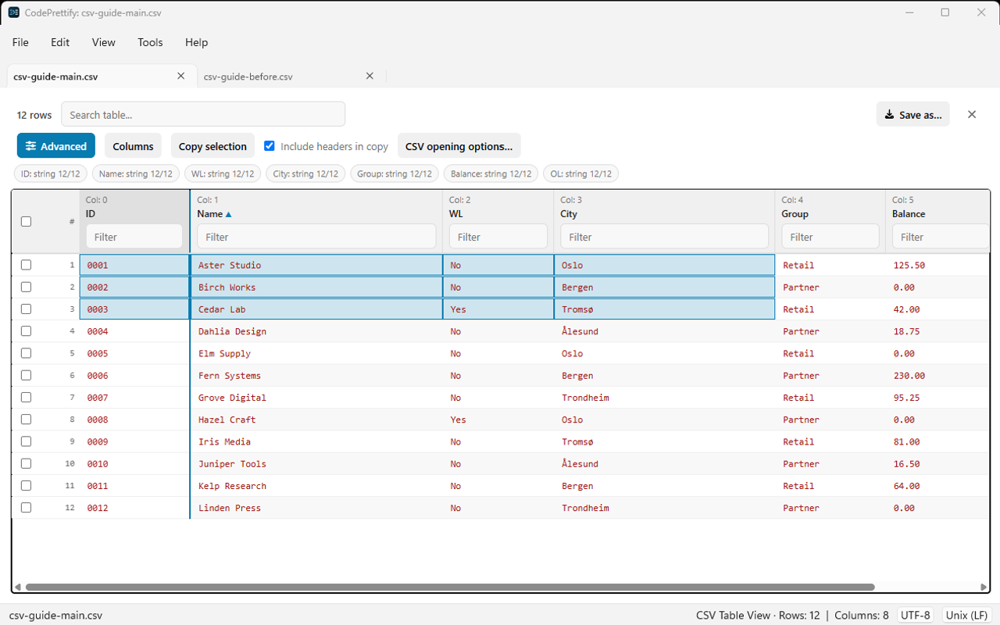
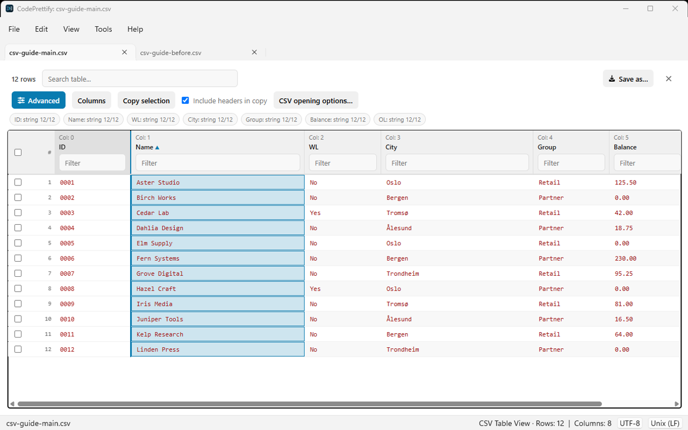
Cell and column ranges are clipboard selections. Save As > Selected rows uses the row checkboxes. For identifiers that must retain leading zeros in Excel, use the .xlsx export: its CSV values are explicitly stored as text. Ordinary clipboard pastes may be interpreted by the receiving application. Double-click a long cell, or focus it and press Enter, to expand its full value.
While Table View is active, its Save as… button, File > Save As, and Ctrl+Shift+S open the same table-specific dialog in the Windows app. Choose the output format, row scope, and ordering, review the counts, then save to a destination.
| Format | Use it for | What to expect |
|---|---|---|
| CSV | A filtered delivery, selected records, or a new column order. | Preserves source delimiter, encoding, headers, empty values, quoting, and leading zeros. |
| JSON | Rows as objects for a script or another data tool. | CSV values remain strings, including IDs such as 0001. |
| HTML Table | A standalone table to open in a browser or share as a report. | Writes an .html file with the chosen rows and ordering. |
| Excel workbook (.xlsx) | A workbook for Excel or another spreadsheet application. | Frozen header row and column filters. CSV cells remain text to preserve identifiers and date-like values. |
| Original file copy | An exact copy of the incoming delivery. | Preserves every source byte. Table filters, selections, and order changes do not apply. |
All rows includes the complete table. Filtered rows uses both table search and column filters. Selected rows includes every checked row, even those currently hidden by filters; the dialog tells you how many are hidden.
The default is Selected when rows are checked, otherwise Filtered when filters are active, otherwise All. Column order and row order are separate choices. In the screenshot below, saving the three selected records includes Birch Works even though the Retail filter hides it.
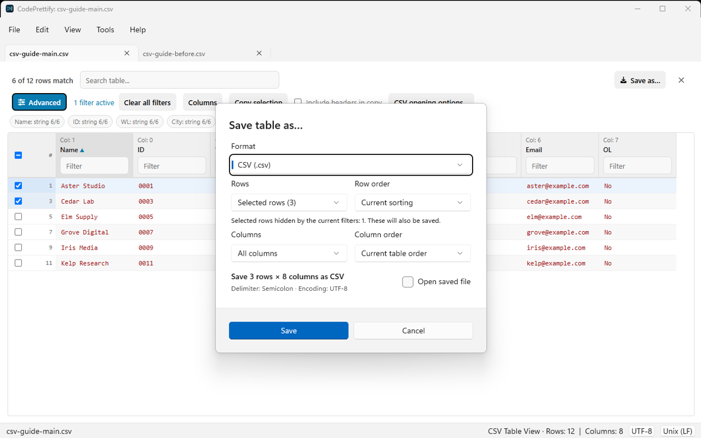
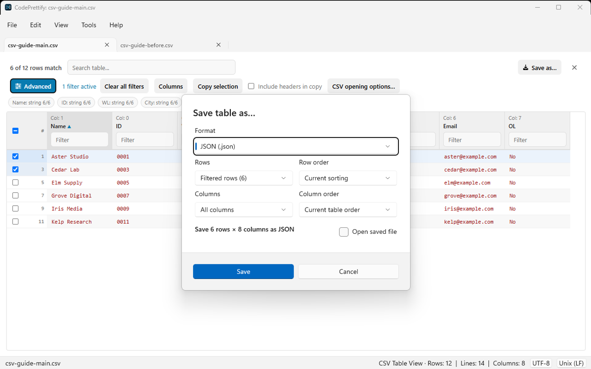
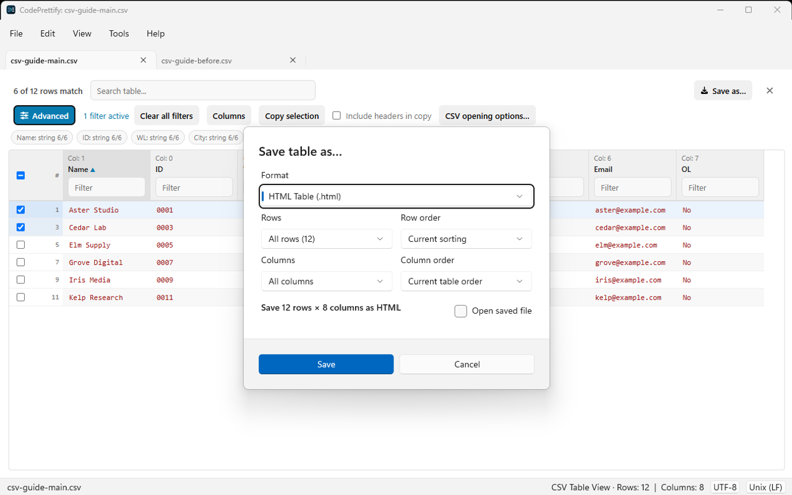
The Columns choice explicitly controls the export scope. All columns is the default and includes hidden fields. Visible columns saves just the fields shown in the table. This works for CSV, JSON, HTML Table, and .xlsx, independently of which rows you choose. Current or Original column order then determines the order within that set.
After hiding Email in the sample, Visible columns saves seven fields; All columns saves eight. Check the row-by-column summary before choosing the destination. Column widths and pin styling are display settings and are not written into CSV data.
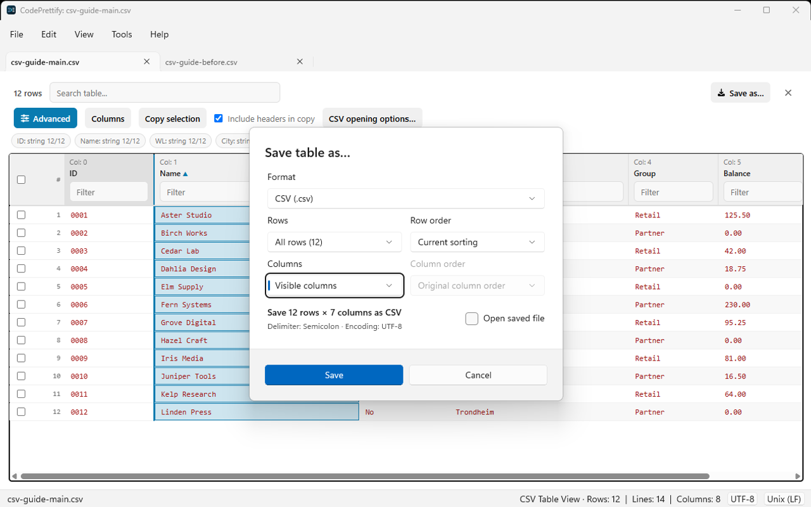
Original file copy disables table transformations. For the other formats, Save As creates a separate output while the open source tab keeps its original file. Enable Open saved file if you want the result to open in its associated application after saving.
Table Save As offers data formats. Code-image capture, Formatted, and Minified are not offered in this dialog. If you need the exact incoming CSV, choose Original file copy rather than exporting a view.
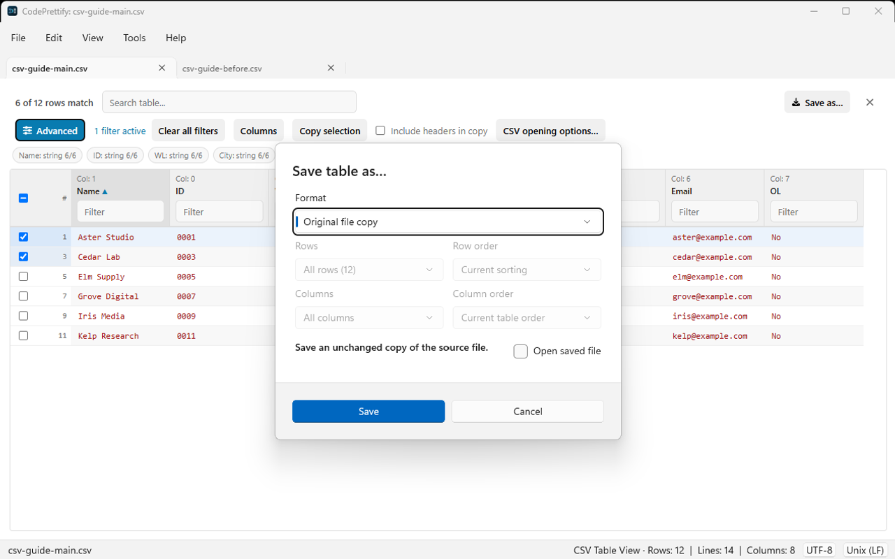
Choose Tools > Compare Table Schema in the Windows app. The active file is preselected as Main file. Under Compare with, choose the earlier delivery. The result describes the main file relative to that other file.
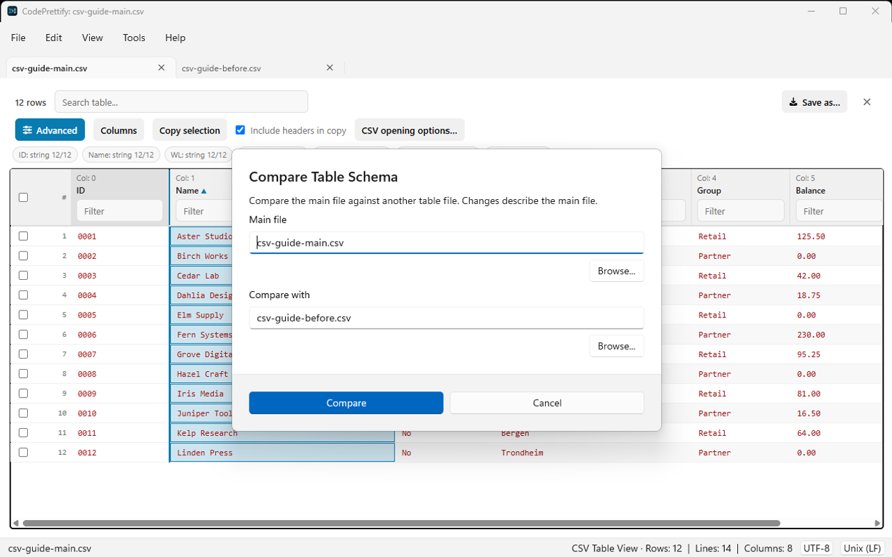
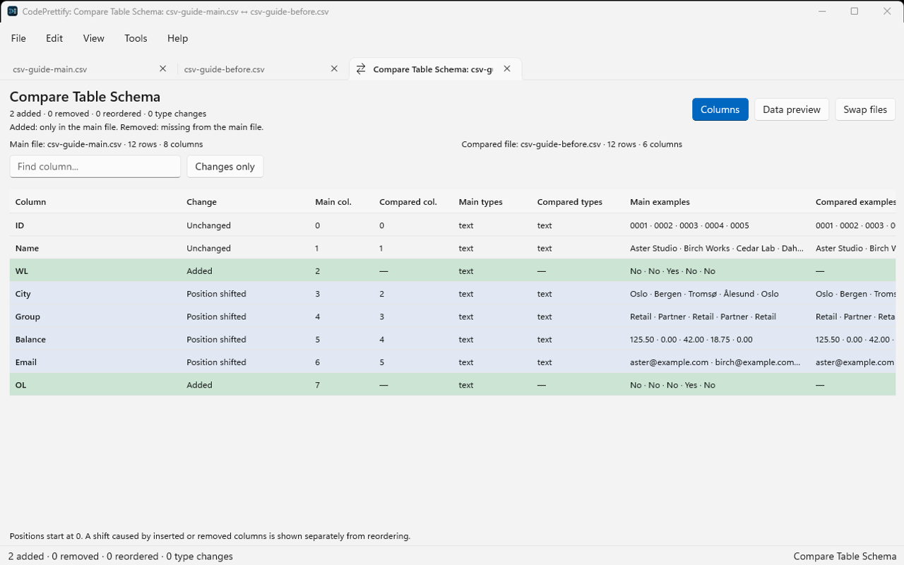
| Change | Meaning relative to the main file |
|---|---|
| Added · green | The column exists only in the main file. WL and OL are green in this example. |
| Removed · red | The compared file contains the column, but the main file is missing it. |
| Shifted · blue | Its index changed because other columns were inserted or removed. City shifts from 2 to 3 when WL is inserted. |
| Reordered or type changed | The relative order of shared columns changed, or the types observed in the data differ. |
The Columns view lists names, main and compared positions, observed types, and example values. Use Find column to locate a field and Changes only to hide unchanged fields. Data preview shows the first ten rows from each file in their source column order, making inserted fields easy to inspect.
Swap files changes which file is the main file. With the earlier delivery as main, WL and OL become red Removed columns. This is a directional comparison; the labels above the files and the added/removed explanation show how to read it.
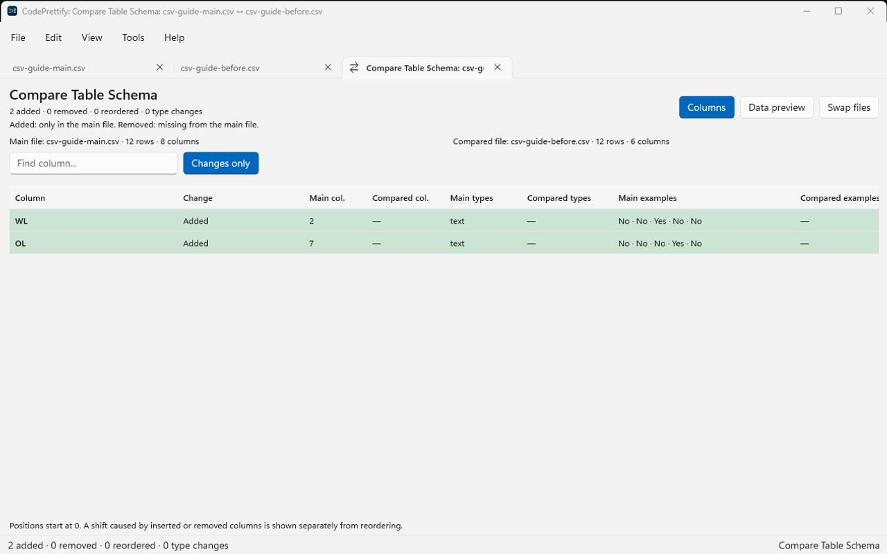
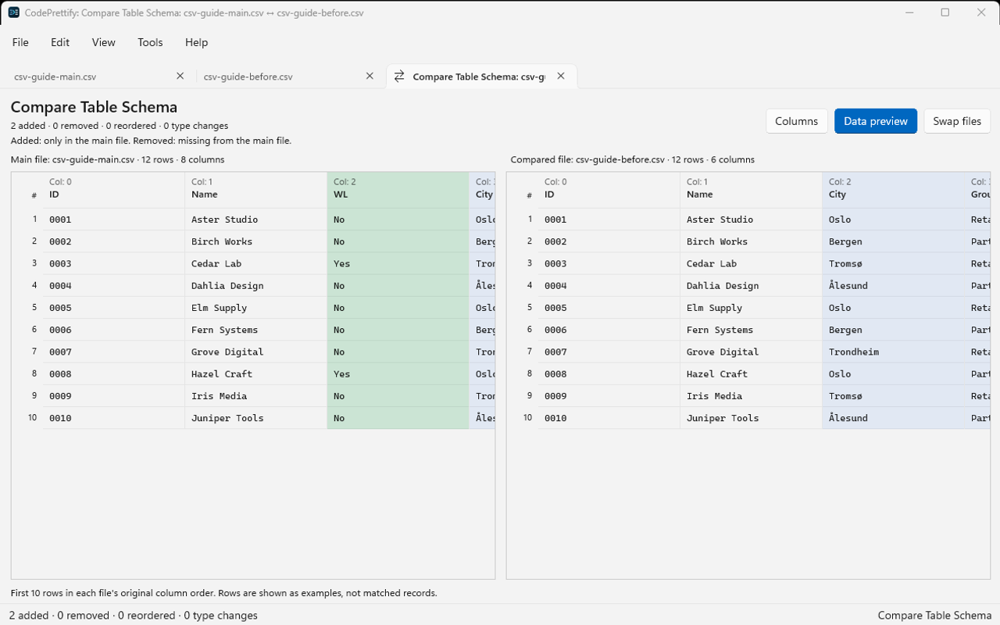
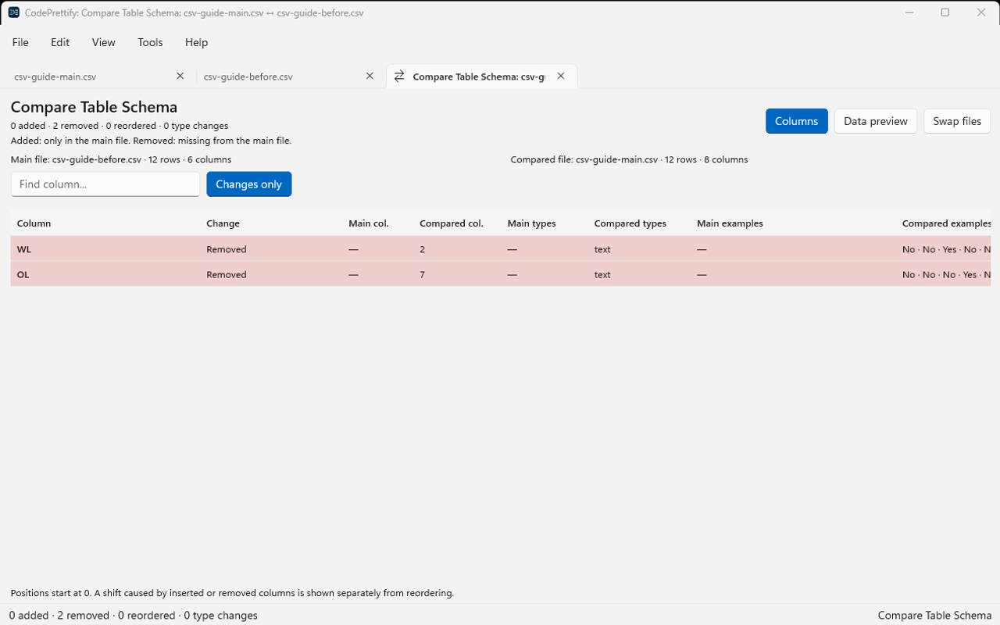
Compare the two downloads and look for these results. You can use the same workflow for compatible JSON arrays and repeating XML/RSS tables in the Windows app.
Schema comparison matches column names exactly. A renamed column appears as an addition and a removal. Types describe values observed in the files; CSV values are text or empty. This view does not match records by ID or report every changed cell. Its examples and preview help explain the structure, rather than verify record-level equality.
Use Tools > Compare File Content when you need to review lines in the actual files. It shows compact rows with added and removed colors immediately, synchronized panes, difference navigation, and a separate summary area.
Inserting a CSV column changes the text of every affected row, so a content comparison can show many changed lines for a small format change. Use Compare Table Schema to answer which fields were added and where. Use Compare File Content to examine the literal line differences.
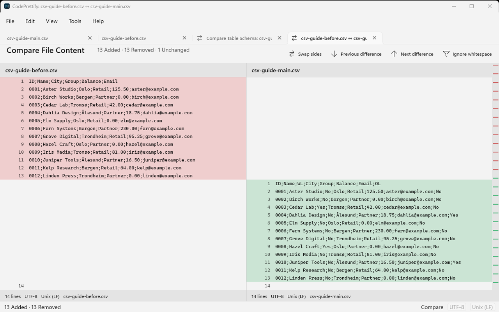
Files of 64 MiB or more use the Windows app’s native read-only pager. CSV pages contain up to 500 rows, with Table View and Raw, page navigation, search, and Go to row. This view has different controls from the full table shown above.
Save As from a paged CSV table exports the complete source file, not just the loaded page. Selection, filtered export, column management, rectangular copying, and changed-order options are unavailable there. Page search does not create a filtered export. Save As from Raw copies the original file.
One workbook sheet supports up to 1,048,575 data rows plus the header, 16,384 columns, and 32,767 characters per cell. The app reports unsupported sizes rather than silently truncating the data. CSV values are exported as text; JSON number and boolean values can use their corresponding cell types.
This workflow exports Excel workbooks from Table View. It does not add .xlsx as an input format. Open the saved workbook in Excel or another compatible spreadsheet application.
Filtering, sorting, and dragging columns change the table view. Use Save As to create an output with those choices. To retain the incoming bytes exactly, choose Original file copy.
Each input can be up to 128 MiB, with at most 4,096 columns. Profiles inspect the rows while retaining bounded examples; Data preview shows only the first ten records. It is a structure comparison, so use another workflow when you need to reconcile individual records by a key.
Opening, filtering, exporting, and comparing these local files runs on your device in the Windows application. This website supplies documentation and sample downloads; you do not upload your CSV to follow the guide.
Use the Windows application to inspect the table, save a selected or filtered delivery, and compare its structure with the earlier format.